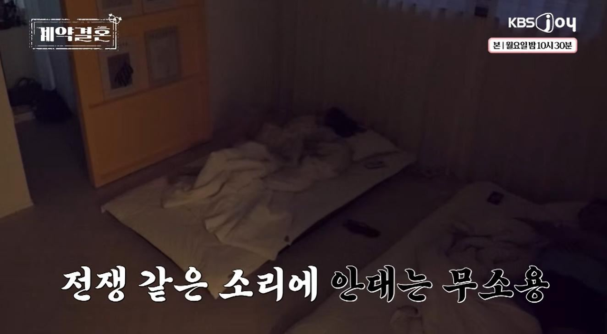
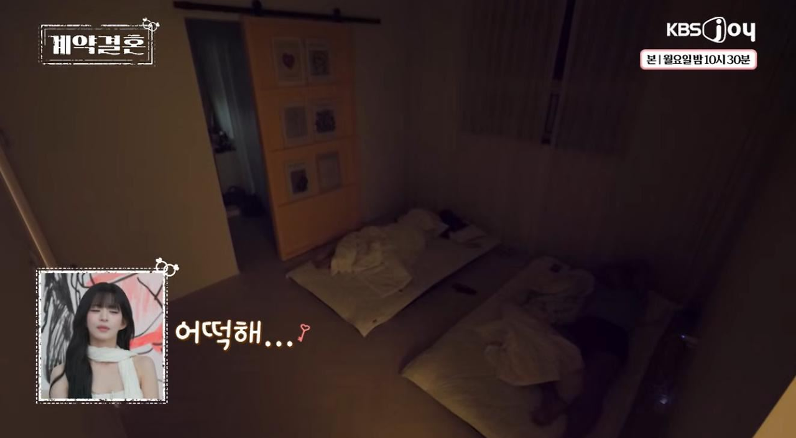
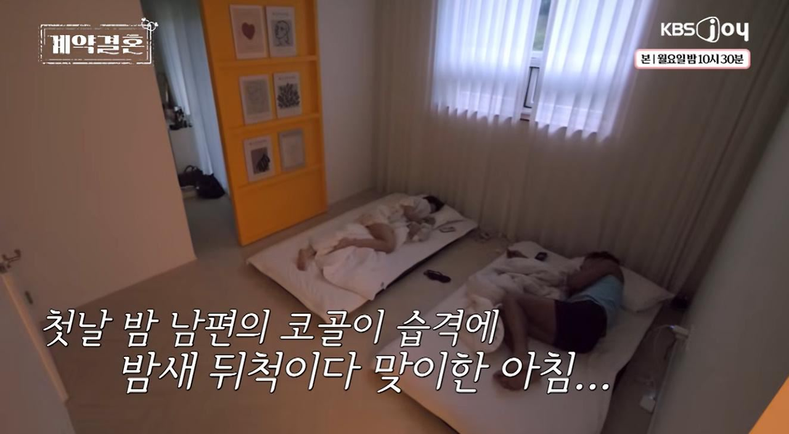

잠자리가 예민한 아내
그런데
첫날밤부터 남편의 코골이 시작



진짜 겪어본 사람만 아는 저 고통…
저거 진짜 각방 쓰게되더라
잠자리가 예민한 아내
그런데
첫날밤부터 남편의 코골이 시작



진짜 겪어본 사람만 아는 저 고통…
저거 진짜 각방 쓰게되더라
코골이 심한거 당해보면 진짜 사람을 찢어죽이고 싶어지더라
옛날 고문중에 잠못자게 하는게 왜 있었는지 몸소체험가능..
단련시켜라
우리딸 애기때부터 내옆에서 자는데 탱크 지나가도 안깬다ㅋㅋㅋㅋㅋㅋㅋㅋㅋㅋㅋㅋ
https://youtube.com/watch?v=sK_CLzXGsG8&si=sk6ugU7xVuYT4Ptq
누구나 한번은 겪었을법한 군대 코골이
결혼 전에 같이 자본적이 단 한번도 없나? 라고 의문을 품었는데 예능 검색해보니까 연애단계 뛰어넘고 바로 결혼생활 시작하는 예능이였네 ㅋㅋㅋㅋㅋㅋ
코고는사람 제발 수면검사 받고 양압기 처방 받아서 양압기 써라 진짜 양압기 쓰는 이유가 코고는것도 없애고 무호흡 수면도 없애는거라 진짜 필수임 ㄹㅇ
아버지가 코골이 잠꼬대 이갈이 3종세트인데 옆에서 버텨내는 사람이 아무도 없음 ㅋㅋㅋㅋㅋ
양압기 반드시